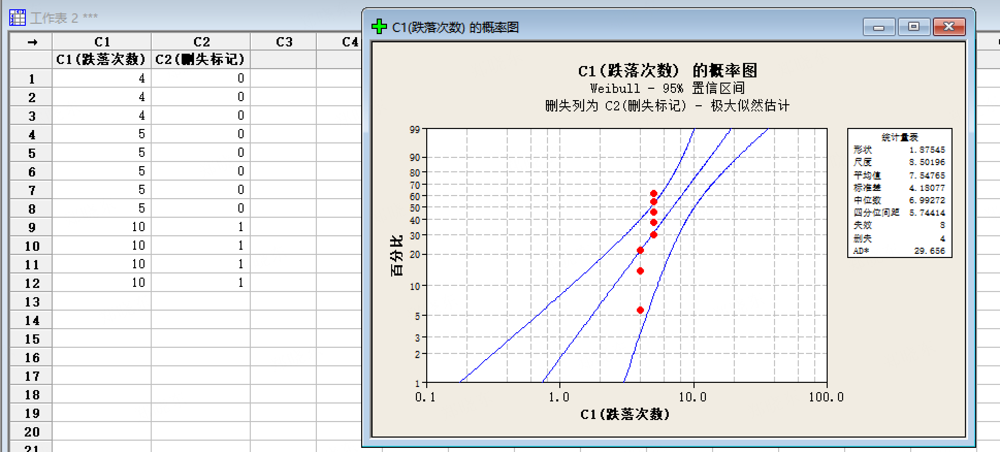

💡 今日知识点：右删失——最容易犯的错误
测试停止时，部分样品还没失效。如果只算失效的、忽略没失效的，会严重高估失效率、高估寿命。
🗣️ 人话版
右删失就是：“测试结束了，但东西还没坏”。
这些“没坏”的数据不是废物——它们告诉你“至少撑到了 X 次”。
如果你把它们删掉，就等于假装这些样品不存在，结果会严重失真。
⚠️ 核心概念
没失效的样品不是“没用”，它们携带了重要信息：至少撑到了测试结束的次数。
必须标记为删失（Censored），而非删除（Deleted）！
❗ 常见错误：把没失效的数据直接删掉 → 只剩失效数据 → 失效率被严重高估 → B10 寿命被严重低估。
📱 传音场景：W-795 跌落测试
12 台手机跌落 10 次停止测试：
• 8 台已失效（3 台在第 4 次，5 台在第 5 次）
• 4 台仍存活（第 10 次时还在）→ 这 4 台就是右删失
| 样品编号 | C1 失效次数 | C2 删失标记 |
|---|
| 1 | 4 | 0 |
| 2 | 4 | 0 |
| 3 | 4 | 0 |
| 4 | 5 | 0 |
| 5 | 5 | 0 |
| 6 | 5 | 0 |
| 7 | 5 | 0 |
| 8 | 5 | 0 |
| 9 | 10 | 1 |
| 10 | 10 | 1 |
| 11 | 10 | 1 |
| 12 | 10 | 1 |
说明：0 = 失效，1 = 删失/全过

图：W-795 跌落数据 Weibull 概率图（MLE 估计，β=1.88，η=8.50）
🔧 Minitab 实操路径
1. 将 12 台数据复制到 C1 / C2
2. 菜单：统计 → 可靠性/生存 → 分布分析（右删失） → 参数分布分析(P)...
3. 变量=C1，删失列=C2，删失值=1
4. 假定分布下拉选 Weibull
5. 点“估计”选项卡 → 将方法改为 “极大似然(MLE)”
6. 确定
⚠️ 避坑指南：MLE vs LSXY
• 若数据高度集中在 2~3 个值（如本例只有 4 和 5），必须用 MLE
• 默认的 LSXY（最小二乘法）可能失真 → β 算崩到 9+
• 判断信号：数据只有 2~3 个不同值时，切换 MLE
✅ 结果验证（第一道关卡）
输出窗口检查：
• “失效数”应显示 8
• “删失数”应显示 4
• 如果不一致 → 数据输入有误，回头检查 C2 列
📝 样本量要求
• 建议至少 10~15 个样品（含删失）
• 删失比例不宜过高（建议删失不超过 50%）
• 传音内部建议：跌落测试至少 12 台，关键机型 30+ 台